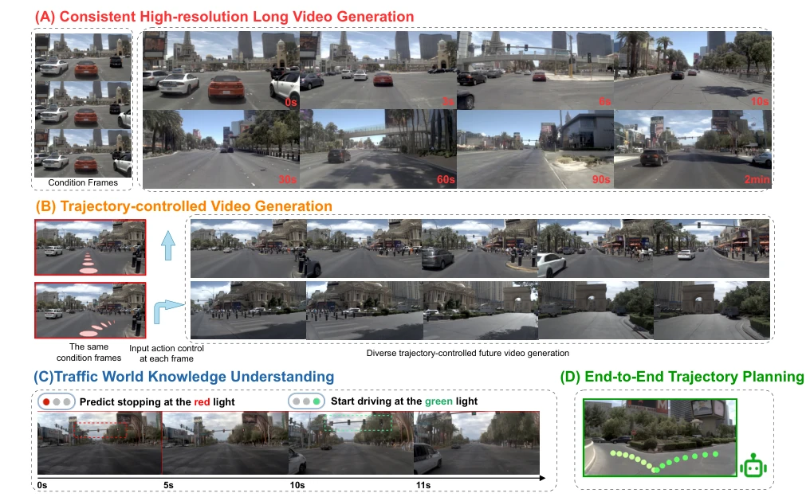
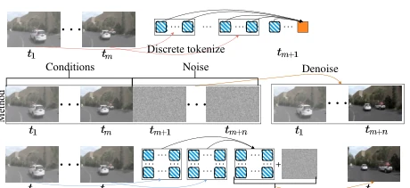
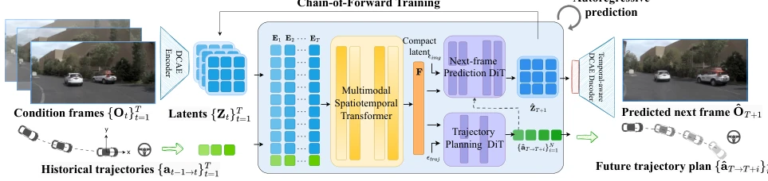
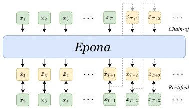
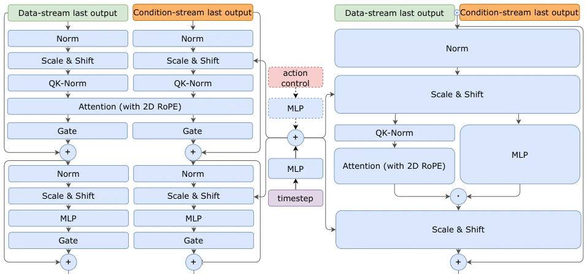
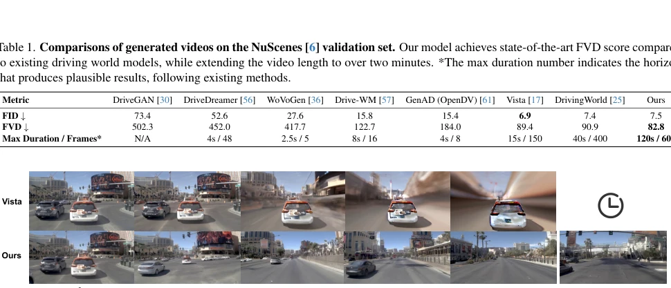
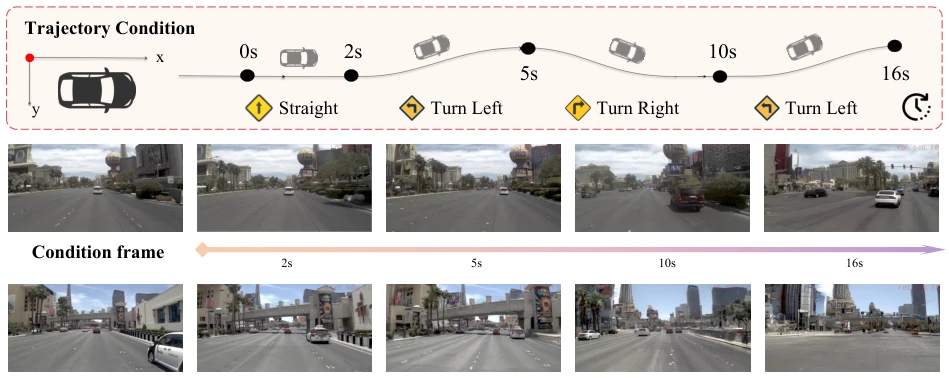
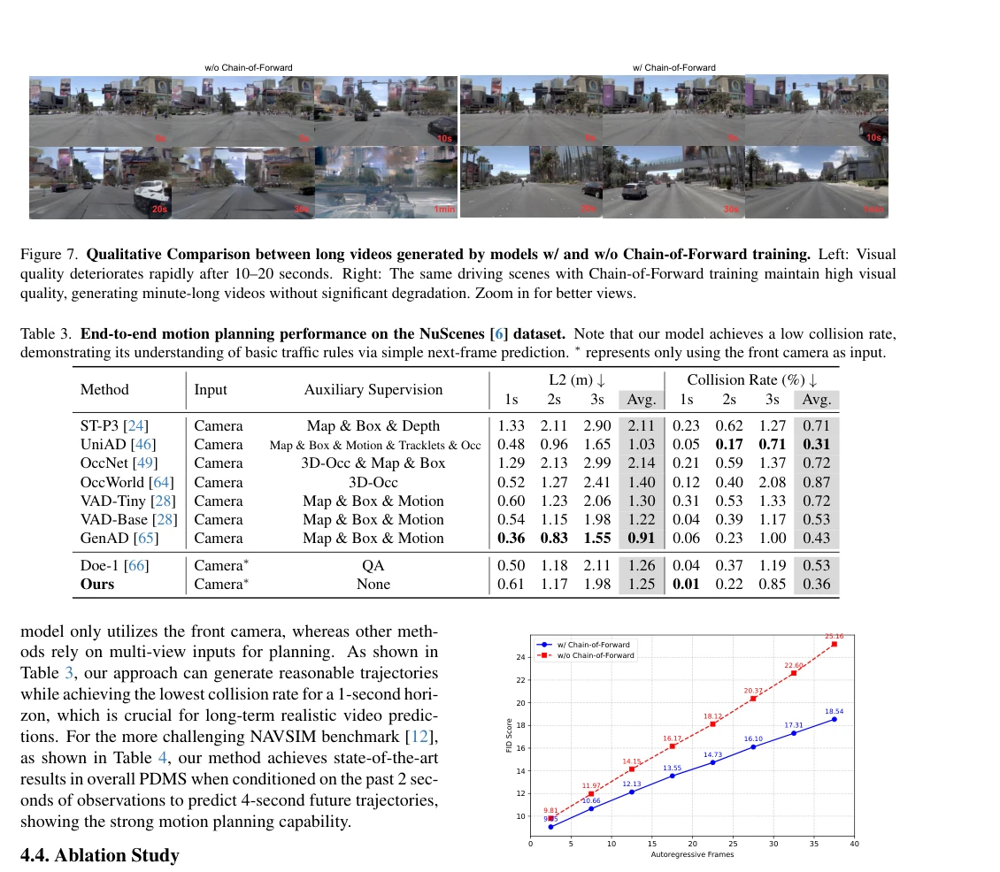
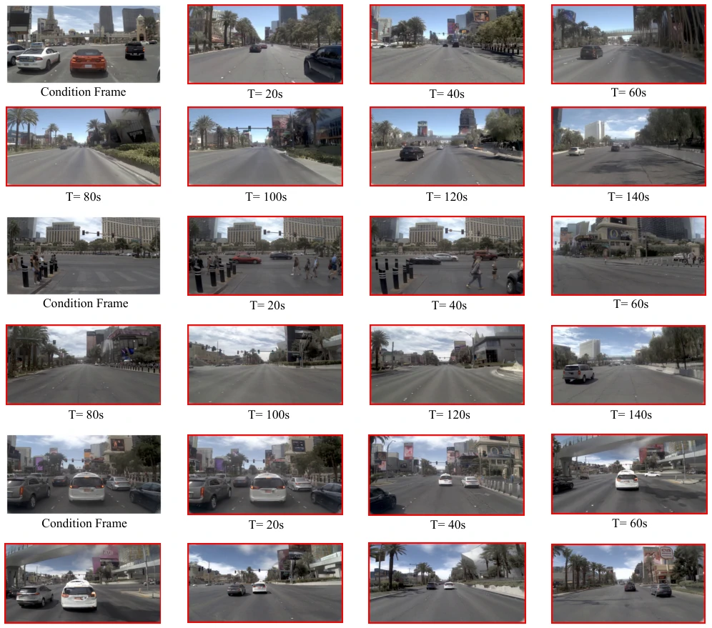

Epona attempts to pursue both in the field of autonomous driving world models: seeking both the high visual quality of diffusion models and the long temporal flexibility of autoregressive models. It decouples space and time, using Transformers to manage time and Diffusion to manage space, and implements a Chain-of-Forward training strategy to prevent autoregressive error accumulation. This approach is quite risky, as excessive autoregressive inference easily leads to "hallucination" collapse, but they indeed extended video generation length from 15 seconds to 2 minutes, and FVD surpassed Vista. More interestingly, the model seems to have implicitly learned traffic knowledge such as traffic light stopping from self-supervised prediction. However, the cost of training with 48 A100s for two weeks, and the degree of dependence of end-to-end planning on perception inputs (although the table states only cameras are used, whether the actual effect is truly robust still needs verification), are all points worth debating. Overall, this is a strong attempt to find a balance between long temporal generation and planning, but "real-time" capability may just be marketing jargon in the face of 2-minute video generation.
Existing autonomous driving world models face a dilemma. Diffusion-based methods (such as Vista [17]), while having good image quality, rely on fixed-length joint distribution modeling, cannot support flexible-length long-range prediction, and lack multimodal trajectory planning mechanisms, making end-to-end planning infeasible. Whereas GPT-based autoregressive methods (such as GAIA-1 [23]), while solving temporal flexibility, severely damage visual quality and planning accuracy through the discrete token process, and causal constraints make it difficult to plan long trajectories. Foundation models like Cosmos [1] have parameters that are too large and lack new frameworks. Therefore, a unified framework is urgently needed that can maintain continuous visual accuracy while achieving causal temporal modeling and trajectory planning, to support human-like end-to-end autonomous driving decisions. This is not only a generation task, but also to build an explainable and controllable physical world simulator.

Figure 1. Versatile capabilities of Epona. Given historical driving context, our Epona can generate consistent minutes-long future driving scenes at high resolution (A). It can be controlled by diverse trajectories (B), and understand real-world traffic knowledge (C). In addition, our world model can predict future trajectories and serve as an end-to-end real-time motion planner (D).

Figure 3. Comparison of Different World Modeling Formula- tion. Up: Conventional autoregressive pipeline quantizes conti- nous images into discrete tokens and perform next-token predic- tion iteratively. Middle: The video-diffusion-based methods gen- erate future n frames simultaneously. Down: Our method autore- gressively predicts fine-grained future frames in continuous space.
Epona's core architecture contains three key modules. First is the Multimodal Spatiotemporal Transformer (MST), which encodes historical visual latents and action sequences into compact latent representations through interleaved multimodal spatial attention and causal temporal attention layers, effectively capturing environmental context. Second are two parallel diffusion Transformers: TrajDiT is responsible for predicting the future 3-second trajectory, VisDiT is responsible for generating the next frame image, both adopting a Dual-Single-Stream architecture, sharing the latent output by MST but denoising asynchronously, ensuring modality alignment. Training adopts Rectified Flow objectives. To solve autoregressive error accumulation, a Chain-of-Forward strategy is proposed, periodically using model self-predicted frames for forward propagation during training to simulate inference noise. Finally, a Temporal-aware DCAE Decoder is introduced, adding a spatiotemporal self-attention layer before the decoder to alleviate video flickering problems caused by traditional image autoencoders. The entire process achieves end-to-end generation from historical context to future video and trajectory.

Figure 2. Overview of Epona. Our world model utilizes a multimodal spatiotemporal transformer to process the historical context of the first T frames and employs a next-frame prediction DiT to generate the frame at T + 1 and a trajectory planning DiT to forecast the future N-frame pose trajectory. By adopting a chain-of-forward strategy, our approach enables high-quality and long-horizon video generation with an autoregressive manner.

Figure 4. Concept illustration of our training process. Here x can be either image latents or trajectories.

Figure 9. Detailed architecture of dual-stram DiT and single stream DiT blocks. We use nearly identical architecures for both TrajDiT and VisDiT, modified from text-image and video DiT architecture from [26, 31]. Action control is only for VisDiT.
Evaluating video generation on NuScenes and NuPlan datasets, Epona's FVD reaches 82.8, superior to Vista's 89.4, and maximum generation duration is improved from 15 seconds to 120 seconds. On the NAVSIM planning benchmark, using only camera input, PDMS score is 86.2, surpassing strong baselines like UniAD, and 1-second prediction collision rate is as low as 0.01%. Ablation experiments show that the Chain-of-Forward strategy significantly improves FID stability for long video generation, removing video prediction harms planning performance, proving the importance of shared latent. Additionally, Temporal-aware DCAE effectively reduces flickering. Although training cost is high, inference speed on 4090 can reach 20Hz planning frequency, demonstrating its practical potential.

Figure 5. Qualitative Comparison between Vista [17] and Epona. Zoom in for better views.

Figure 6. Trajectory-controlled video generation. Our world model can generate controllable videos based on predefined trajectories.

Figure 8. Effect of Chain-of-Forward training. FID comparison in NuPlan test set between models w/ and w/o Chain-of-Forward training strategy.

Figure 10. Visualization of Longer Videos. Our world model is capable of generating extended videos (140 seconds) while maintaining high visual quality and detailed vehicles and buildings.